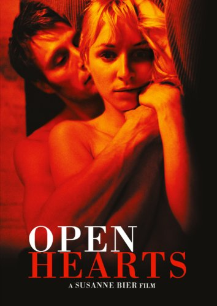

| Cím | Megjelenés éve | Nemzetiség | Rendező |
|---|---|---|---|
| The science of sleep | 2006 | francia | Michel Gondry |
| Fantastic Mr. Fox | 2009 | amerikai | Wes Anderson |
| Biutiful | 2010 | spanyol | Iñárritu |
| Ádám almái | 2005 | dán-német | Anders Thomas Jensen |
| Open hearts | 2002 | dán | Susanne Bier |
| Gengszterek fogadója | 2000 | dán | Anders Thomas Jensen |
| Nagy hal | 2003 | amerikai | Tim Burton |
| Wristcutters | 2006 | horvát | Goran Dukic |
| 21 gramm | 2003 | amerikai | Iñárritu |
| Persepolis | 2007 | francia | Vincent Paronnaud |
| Bebukottak | 1985 | magyar | Mész András |
| Ítélet Nürnbergben | 1961 | amerikai | Stanley Kramer |
| Az ötödik pecsét | 1976 | magyar | Fábri Zoltán |
| Libanoni keringő | 2008 | izraeli | Ari Folman |
